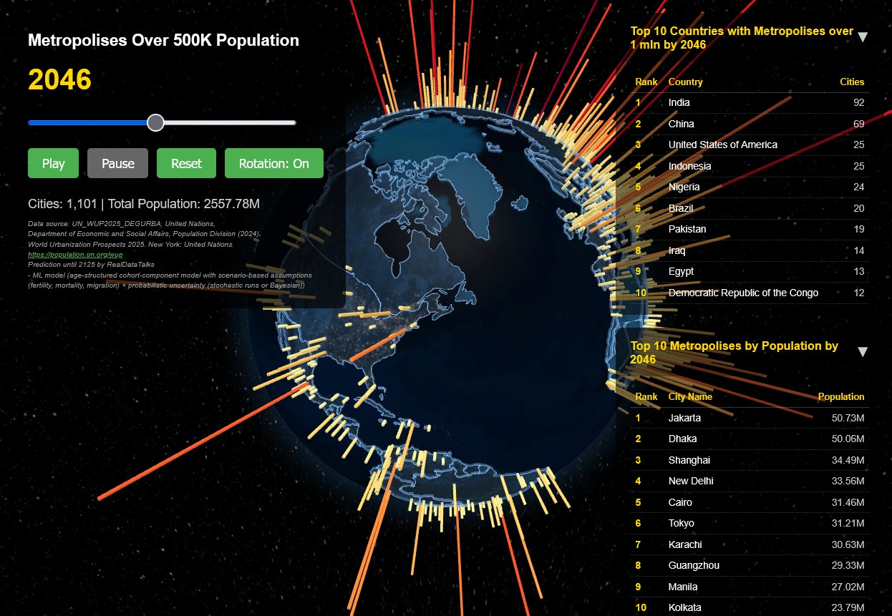

Global Map of Metropolises in 2125 is a speculative urban research project exploring the long-term evolution of the world's largest metropolitan regions.
In The Art of Shaping the Metropolis, Pedro B. Ortiz argues that metropolises are expanding at an unprecedented scale in human history. Their systems of governance have become comparable in complexity to those of nation-states, while their economic, political, and cultural influence increasingly concentrates global power. Some futurists have even suggested that the United Nations could one day evolve into a body of "United Metropolises."
Building on this premise, the project investigates how approximately 1,000 metropolises may grow, stabilize, or decline by the year 2125. The analysis acknowledges critical demographic forces—particularly declining fertility rates in developed countries—alongside broader trends such as urban concentration, migration, and regional imbalance.
The timeline begins in 1975 and extends across 150 years of global urbanization, offering a long-range perspective on metropolitan transformation and the possible future geography of human settlement.

Click the image above to open the application in full screen.